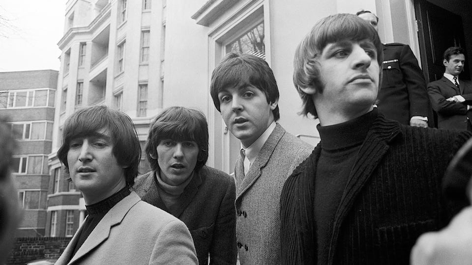

Rubber Soul
Rubber Soul adalah album studio keenam oleh grup rock asal Inggris The Beatles, dirilis pada 3 Desember 1965. Diproduksi oleh George Martin, tercatat hanya dalam waktu empat minggu untuk membuatnya.
Berbeda dengan lima album yang mendahuluinya, album ini direkam selama jangka waktu tertentu, sesi tidak melesat di antara kedua tanggal tur atau selama proyek syuting. Setelah ini, Setiap album Beatles akan dibuat tanpa perlu memperhatikan komitmen lain, kecuali untuk produksi film promosi pendek. Rubber Soul adalah album bergenre folk rock, dan juga menggabungkan unsur pop dan gaya musik soul.

Daftar lagu
sisi pertama
- Drive My Car
- Norwegian Wood (This Bird Has Flown)
- You Won't See Me
- Nowhere Man
- Think for Yourself
- The Word
- Michelle

sisi kedua
- What Goes On
- Girl
- I'm Looking Through You
- In My Life
- Wait
- If I Needed Someone
- Run for Your Life
Album ini digambarkan sebagai prestasi artistik utama, mencapai keberhasilan dan komersial secara luas, dengan pengulas memperhatikan pengembangan visi musik The Beatles. Rubber Soul sukses secara komersial, dan sering dikutip sebagai salah satu album terbesar dalam sejarah musik.Pada tahun 2012, Rubber Soul menduduki peringkat #5 pada daftar "500 Album Terbaik Sepanjang Masa " versi majalah Rolling Stone.
⬅ Album sebelumnya Menu Album selanjutnya ➡